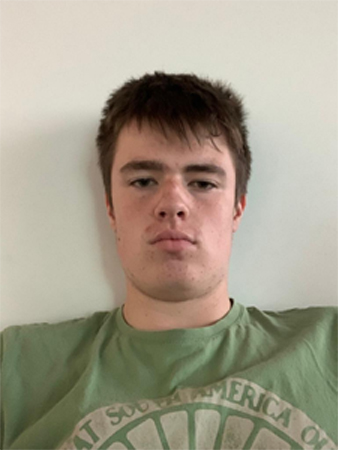
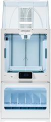
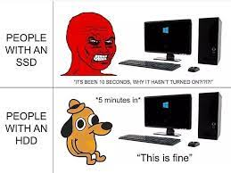

Nick van Eck
Hello my name is Nick van Eck I'm 16 and live in Noord-Brabant the Netherlands.
My hobbies are programming, 3d-printing, building PC's and playing a game or 10 of tennis.
I like playing tennis on grass and try to play 2 times a week which is hard if you need to start at
17:30
and are home at 18:30. I mean school right? I also love to build my own PC and like to take it
apart.
I have been coding for about one year now and am still learning every day at home.1234567
If I'm at home I also like to fix my 3d-printer because it breaks all the time my 3d-printer is an Ender
3 pro it only costs around 180 euro's so you can't expect much of it but still I like it to fix the
problems I encounter with it. for the rest I like to spend too much money on other gadgets because I
can.
I also like to play some video-games like baldur's gate and zero-k it's a game like warhammer 40.000.
Very strategic you need to build some troops and attack strategic places to destroy them.
Hobbies
- 3d printing
- programming
- building pc's
- Tennis



